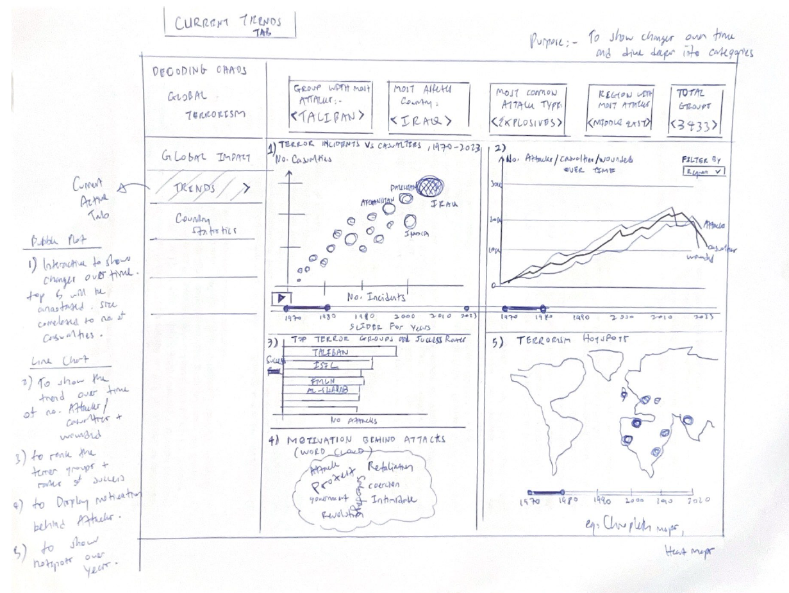
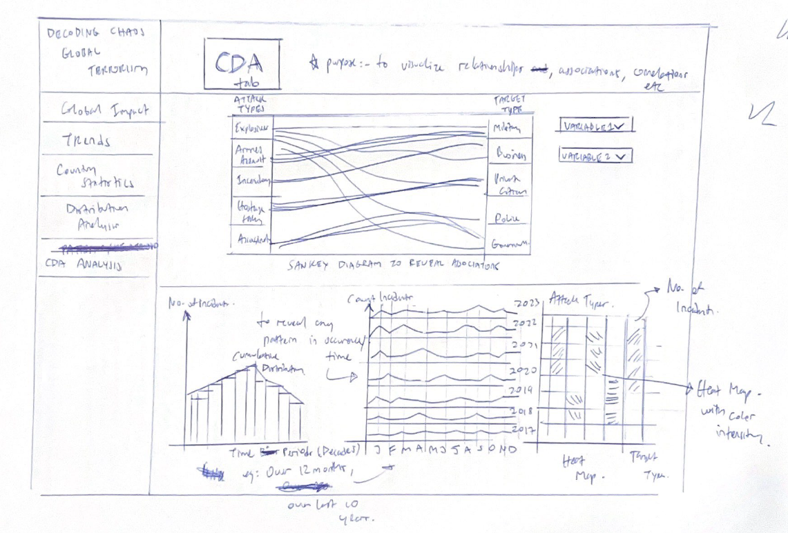

Terrorism, especially coordinated attacks targeting innocent civilians, have been a constant in our lives, threatening the public both physically and psychologically. A good visual analysis of terrorist attacks is essential to help (1) discover global terrorism trends, (2) unveil hidden relationships among terrorist networks through their attacks and (3) ascertain the impact of fatalities and losses.
The team aims to use open-source data which includes information on terrorist events globally to provide easy-to-use and insightful visualization tools that can be especially suitable for Defence and Security sectors to develop effective counter terrorism measures and strategies.
Objectives
The objective of this project is to:
Examine open-source data on terrorist events worldwide (The Global Terrorism Database(GTD)) and derive useful insights on the factors and conditions that may affect international terrorist incidents, and
Build a web-enabled interactive visual analytics application by using R Shiny based on this Global Terrorism Database(GTD).
Data
The project will examine the Global Terrorism Database™ (GTD) from University of Maryland. The dataset consist of XX variables and XX datapoints. The team intends to manipulate the dataset as follows:
Create new columns…….. to achieve..
Filter dataset… to achieve..
Methodology & Analytical Approach
For this project, the following approach will be taken by the team:
Data Preparation: Clean the dataset by handling missing values, removing irrelevant variables, filtering variables and encoding categorical variables if necessary.
Exploratory Data Analysis via Data Visualisation Methods: Analyse the dataset to understand the distribution of variables, identify patterns, and explore correlation between variables. Such as using:
Time-series bar/ line chart and bubble plot
Geospatial heatmaps and hotspot maps
Confirmatory Data Analysis via Statistical Methods: Analyse the dataset using statistical testing tools to test hypotheses, evaluate the findings and arguments (e.g. strength of relationships between variables) and make statistical observations under uncertainty.
Correlation test:
Correlation web plot, or
Significant Test of Correlation: ggscatterstats()
Model Diagnostic: checking for multicollinearity
Model Diagnostic: checking normality assumption
Oneway ANOVA Test: ggbetweenstats() method
Prototype Sketches
The following sketches were drawn to conceptualize our thoughts and discussions on the layout of the Shiny app along with its various functions.
These will subsequently be refined as we further codify and render our graphs and application.
The various sections of our app consists of:-
Landing page - to visually summarize the impact of Global Terrorism incidents till date
Global trends- to examine the trends over time and deep dive into the nature of events
Country statistics - to enable users to deep dive into individual countries or regions to understand the impact of Terrorism on that locality
Distribution analysis - to examine the Distribution of Terror events against categorical variable like nature of targets, weapons used and types of attacks
Confirmatory Analysis - to visualize and examine/test for relationships, associations and correlations etc
Serves as a “Cover page” to inform and summarize the global impact till date.
World map will be rendered in different colour intensity to identify the countries/regions most impacted.
We can use existing latitude/longitude data to render the locations of events.
Further interactivity can be implemented with the tooltip.

Dash board to identify the countries most affected, groups with most attacks, type of weapons used, forms of attacks etc.
The purpose of this page is to show changes over time and to deep dive into categories of events
Type of charts that we can use:-
Interactive or Animated Bubble plot that can show the countries most affected over time. Use of time slider or play button for animated graph
Line chart to plot how the number of attacks, casualties, wounded have changed over time. Use of time slider or play button for animated graph
Bar chart to show the top terror groups
Word cloud to visualize the motives behind the attacks
Global map to show the changes in terrorism “hotspots” over time
This page adds continuity from previous page of global trends.
Upon identifying a country/region most or least impacted by terrorism, users can further examine in more detail, that particular country or region
Users can examine the distribution of Terror events against categorical variables.
For example, Terror events across regions, attack types, targets, weapons etc

In this page, we will examine and visualize relationships, associations and correlations.
For example:-
Associations between categorical variables eg: ‘Modus operandi’ Vs Targets types,
Examine if there is any seasonality in attacks,
Additional plots to show tests of correlation, normality, hypothesis testing etc
R Packages
Our team intends to use the following R packages to run the R Shiny Application:
tidyverse: a family of modern R packages specially designed to support data science, analysis and communication task including creating static statistical graphs.
knitr: an report generation tool.
dplyr: an R tool for working with data frame (e.g. objects).
ggstatsplot: an extension of ggplot2 package for statistical visualisation and graphics creation.
ggdist: an R package that support visualisation of distribution and uncertainty.
ggiraph: for making ‘ggplot’ graphics interactive.
plotly: R library for plotting interactive statistical graphs.
performance: an R package used for assessment, comparison and testing of statistical models.
parameters: an R package used for processing parameters of various statistical models.
RColorBrewer: an R package that provide various colour schemes and colour palettes.
patchwork: an R package for preparing composite figure created using ggplot2.
DT: an R interface to the JavaScript library DataTables that create interactive table on html page.
Project Schedule
Below is an overview of our project timeline. For detailed list of task, please refer to gantt chart submitted.